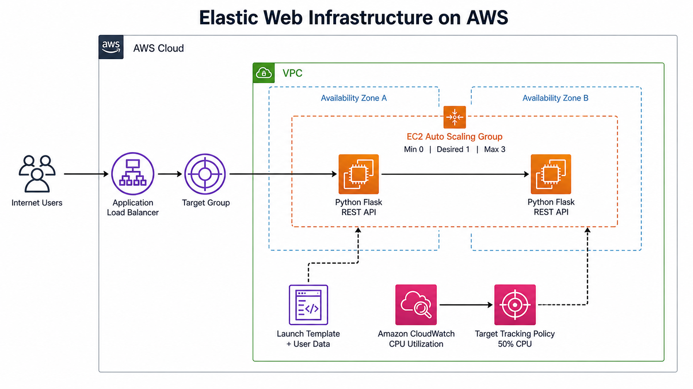

AWS Elastic Infrastructure
A web service that grows and shrinks with its own traffic — load balanced across EC2, scaled by CPU demand.
Elastic Web Infrastructure on AWS
A single server is a single point of failure and a fixed ceiling on throughput. This project replaces it with infrastructure that has neither: an Application Load Balancer spreads HTTP requests across healthy Flask instances in two availability zones, and an Auto Scaling group watches average CPU utilization and provisions or terminates instances on its own — each new machine bootstrapping itself from a launch template and joining the load balancer without anyone touching a console.

Project Overview
Scale-out: under simulated CPU load, the Auto Scaling group provisioned new instances against a 50% average CPU target and each one passed its health check and began serving load-balanced traffic automatically.
Scale-in: once demand fell away, the group terminated the surplus instances back toward its desired capacity — capacity tracking demand in both directions, not just upward.
Built as a hands-on AWS project: a Python Flask REST service deployed on Amazon EC2, fronted by an Application Load Balancer, and placed under an Auto Scaling group sized min 0 / desired 1 / max 3 across two availability zones. The goal was to work through the whole chain end to end — networking, health checks, bootstrapping, and elasticity — rather than any one piece in isolation.
The Challenge
Elasticity only works if a machine that did not exist a minute ago can configure itself, pass a health check, and start taking real traffic with no manual step in between. Getting there means the security groups, the target group, the health-check path, and the startup script all have to be right at once — any one of them wrong and instances launch but silently never receive a request.
My Approach
An EC2 launch template with a user-data startup script that installs dependencies, pulls the application code, and starts the service on boot; security-group rules scoped so the load balancer — and only the load balancer — can reach the application port; and a target-tracking scaling policy driven by CloudWatch average CPU utilization. Then I verified it the only way that counts: generating CPU load and watching instances appear, register, and later drain away.
Technology Stack
Key Features
Every layer between an incoming request and the process that answers it — routing, health, bootstrapping, and the policy that decides how many machines exist at all.
Load-Balanced Flask Services on EC2
Python Flask REST services developed and deployed on Amazon EC2, with an Application Load Balancer and target group distributing incoming HTTP requests across every instance currently reporting healthy.
Security Groups & Health Checks
Security-group and health-check rules written so the load balancer can reach the application safely and reliably — the application port open to the balancer rather than the open internet, and an endpoint that tells the target group when an instance is genuinely ready.
Self-Bootstrapping Launch Template
An EC2 launch template carrying a startup script that installs dependencies, retrieves the application code, and launches the service — so a newly provisioned instance is serving traffic without any manual configuration.
CPU-Driven Target Tracking
An Auto Scaling group with a target-tracking policy on average CPU utilization, spanning two availability zones, which adds and removes capacity to hold the metric near its target instead of reacting to hand-set thresholds.
Verified Scale-Out and Scale-In
Scale-out tested under simulated CPU load, confirming that newly created instances automatically joined the load balancer; scale-in validated after demand decreased, so idle capacity is released rather than left running and billed.